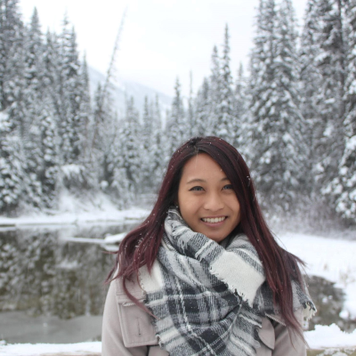

Hello! I am a UCLA Coding Bootcamp student looking for a career change to computer science. I graduated from Franklin & Marshall College with a Bachelor of Arts degree in Biochemistry in May, 2016.
Interestingly enough, my college was located in Lancaster, Pennsylvania (basically an Amish reservation). I went from the city/suburban life straight to farmland. It was a huge culture shock to me
as that was the first time I've ever left California.. and to live in another state. However, I've gained a lot of experiences while I was out there trying to live independently. I was very focused
in my studies and my passion with nothing really around me that was distracting, just open farm lands.
Ever since I moved back to La Puente, California, I was working at a dental office gaining more experiences and building my resume, until I thought it was time for a change. Dental school is a huge commitment
and is time-consuming, which is not what I want right now. Thus, I decided on a career change. My coding background is little to none. The only coding I remember ever using is for Myspace, calculus, and biostatistics.
After realizing that dentistry might not be for me right now, I hope to utilize this course as a stepping stone and hope to add these new skills that could potentially help me pursue
something related to biochemistry.